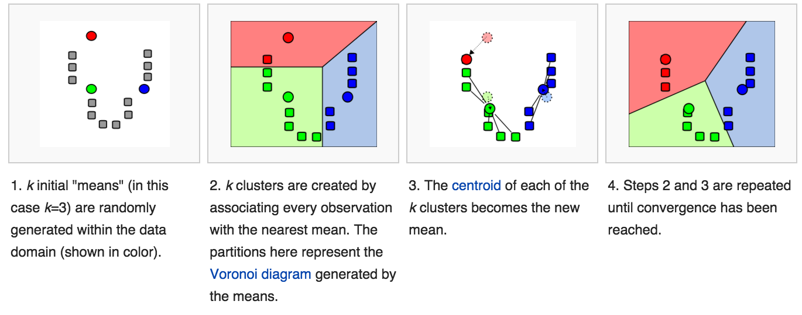
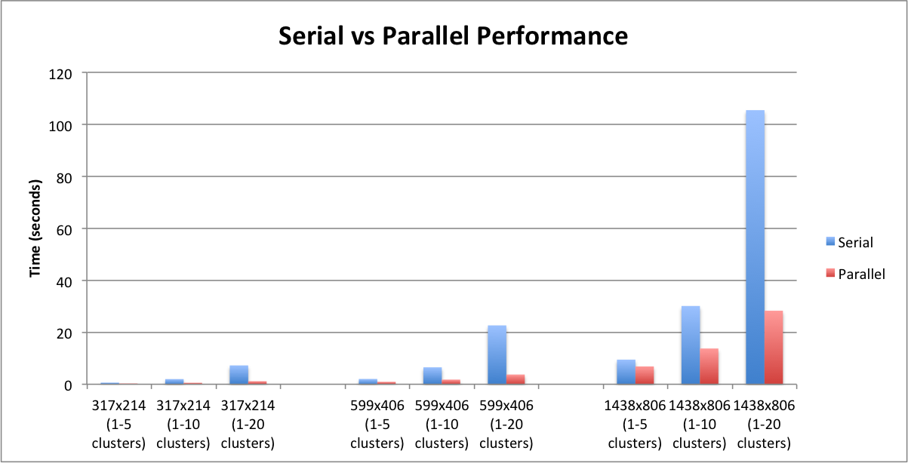

Project Goal
Our goal was to learn more about parallel computing and compare the performance of a k-means clustering algorithm in serial code with one written with parallelizable code.
What is CUDA?
CUDA is a parallel computing platform created by NVIDIA. It lets you use your GPU to run general purpose programs in parallel, which can give massive speed boosts to well designed programs. CUDA only runs on Nvidia graphics cards. However, there are several open source alternatives to CUDA if you have a different brand of GPU.

What is K-means color quantization?
K-means clustering is a simple algorithm for partitioning points into clusters. Each cluster has a centroid, which is the mean of all points in that cluster. The algorithm assigns all points to the nearest centroid, then recalculates the coordinates of that centroid as the mean of all points in the cluster. It then repeats this process for a specified number of rounds or until no points shift clusters during a round. Color quantization is a process for reducing the number of distinct colors in an image. This can greatly help save memory space to store an image. To store each pixel as full RGB data, we require 24 bits of data. However, if we only have 256 different colors we can index them and each pixel only requires 8 bits of data. This can reduce the size of image files by up to 66% while keeping the image at the same resolution. K-means assigns pixels to a cluster in RGB space, then replaces that pixel with the RGB value of that centroid.
Serial Code Implementation
First we implemented our algorithm in serial CPU code. This was fairly simple and ran predictably slow with very large images. Below is a diagram showing the steps of k-means clustering.
Parallel Implementation
Next we needed to implement this same algorithm using CUDA. Luckily, we were able to reuse much of the same code, we just needed to figure out what to run in parallel. There were 2 parts of the algorithm we wanted to speed up by running in parallel. The first was the assignment of pixels to clusters. The distance between each centroid and each pixel must be calculated, so we ran this calculation for each pixel in parallel. In serial code, the speed of this operation is roughly O(c*r*y) where c is the number of columns, r is the number of rows, and y is the number of clusters. Once this is run in parallel, the time complexity becomes O(r*y) because each row of pixels is run in parallel. This means that for a 1000x1000 image this step of the algorithm is sped up 1000 times. The next operation to run in parallel was remapping of the original image pixels to the new cluster colors. The time complexity for this operation is just O(p) where p is the number of pixels. We run sets of 3 pixels in parallel, such that time complexity is O(p/3). All of these operations do have a set amount of time needed to instantiate the CUDA kernel. However, we believe this time will be negligible compared to the potential speed benefits of running these parts of the algorithm in parallel.
Performance
Next we needed to implement this same algorithm using CUDA. Luckily, we were able to reuse much of the same code, we just needed to figure out what to run in parallel. There were 2 parts of the algorithm we wanted to speed up by running in parallel. The first was the assignment of pixels to clusters. The distance between each centroid and each pixel must be calculated, so we ran this calculation for each pixel in parallel. In serial code, the speed of this operation is roughly O(c*r*y) where c is the number of columns, r is the number of rows, and y is the number of clusters. Once this is run in parallel, the time complexity becomes O(r*y) because each row of pixels is run in parallel. This means that for a 1000x1000 image this step of the algorithm is sped up 1000 times. The next operation to run in parallel was remapping of the original image pixels to the new cluster colors. The time complexity for this operation is just O(p) where p is the number of pixels. We run sets of 3 pixels in parallel, such that time complexity is O(p/3). All of these operations do have a set amount of time needed to instantiate the CUDA kernel. However, we believe this time will be negligible compared to the potential speed benefits of running these parts of the algorithm in parallel.
Examples
The number at the top left indicates the number of centroids (colors used).


Contributors
Griffin Tschurwald, Jasper Chen, Jack Fan